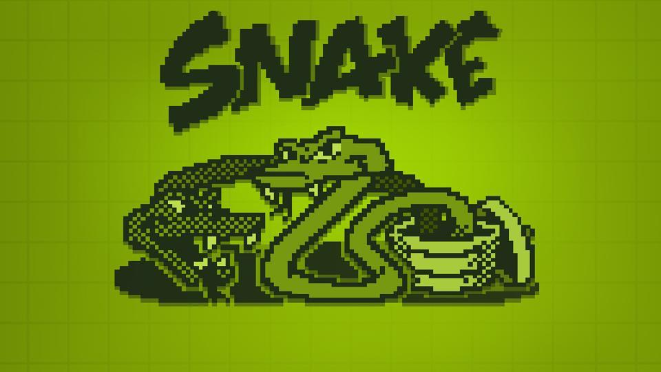

About Me
My name is Kevin Tu and I am a sophomore at Boston University pursuing a B.S. in Computer Science.
A bit about myself; my initial interest in coding was sparked by video games – more specifically about the functionality behind the screen.
I began researching basic programming languages early on in high school which later help feed my curiosity to learn more about programming in general.
My Projects Below

This game was coded in Processing, a language based off of Java, and it has two modes to the game. The first mode is played with two players and the other is single player. The goal of the two player mode is to try and trap the other player with your tail while collecting apples to grow longer. The single player mode is just the classic game of snake.

Built an interpreter from scratch for a small, OCaml-like, stackbased bytecode language. This was implemented by using Ocaml. Just like the image shown it takes in a text file as an input and executes the instructions to produce the output file.
Simulator for single
server queue
Built a simulator for a single server queue from scratch in Java. The Simulator simulates a single-server queue, where the time to process a request at the server is modeled using an exponential distribution, while the arrival process of the requests follows a Poisson distribution.

Implemented Dijkstra's algorithm in Java. Given a text file with the start node, the total number of nodes and edges in the first line and other nodes and neighbors with their respective edge weights in the rest of the file, the code finds the shortest possible path from the start node to every reachable node. In the end, it outputs a file with the node it reaches, the weight of the path, and the parent node in one line for each reachable node.